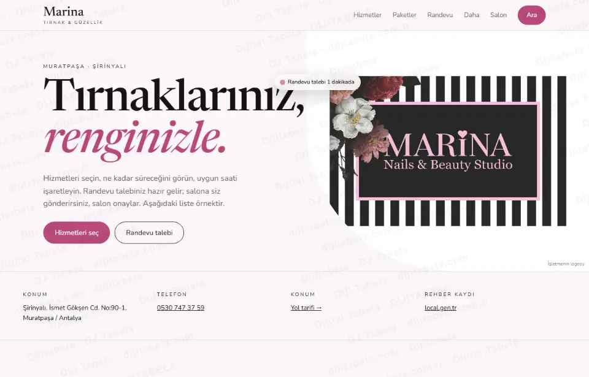
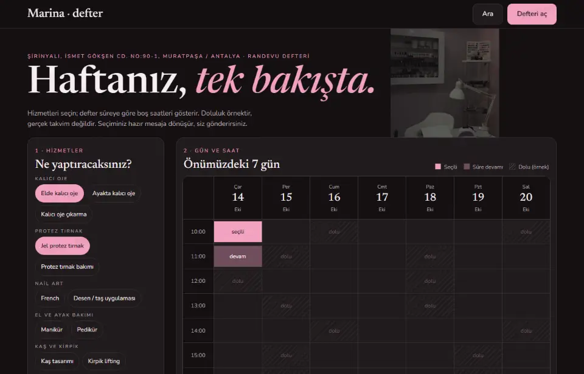
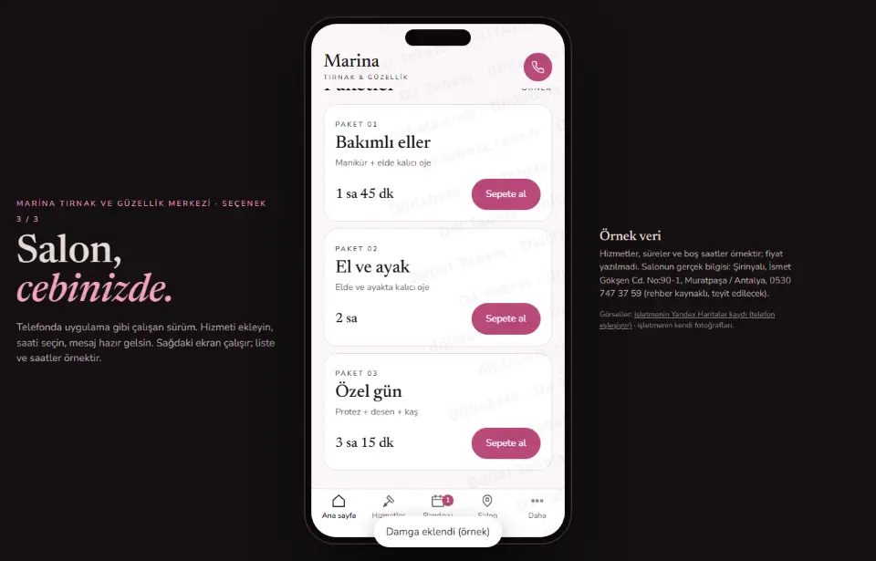

Randevu için aramak yerine, hizmetinizi seçip saatinizi işaretleyin · 3 tasarım
Marina Tırnak ve Güzellik Merkezi’nın herkese açık kaydını inceledik: işletme local.gen.tr rehberinde telefonu ve adresiyle görünüyor (Şirinyalı, İsmet Gökşen Cd. No:90-1, Muratpaşa / Antalya). Rehber kaydında web alanı boş; kendi sitesi bulunamadı. Müşterinin hizmeti seçip süreyi ve boş saati görebildiği, randevu talebini hazır mesaj olarak gönderebildiği bir sayfa hazırladık. Üç tasarım da çalışır durumda. Hizmet listesi, süreler ve boş saatler örnektir; bu turda fiyat yazılmadı; işletmenin gerçek bilgisi değildir ve hiçbir mesaj otomatik gönderilmez.

Aydınlık, editoryal; hizmetleri kategoriye göre seçin, süre planını ve toplamı görün.
Salon yerleşimi: sepet, süre çubuğu, gün-saat seçimiCanlı aç →
Koyu zeminde haftalık tablo; seçilen hizmetlerin süresine uyan boş saat bloğunu gösterir.
Defter yerleşimi: haftalık ızgara, süre uyarısıCanlı aç →
Telefon çerçevesinde uygulama gibi: ana sayfa, hizmetler, randevu, salon.
Uygulama yerleşimi: alt menü, kaydırmalı ekranlarCanlı aç →- Hizmet sepeti: hizmetleri seçince toplam süre anında hesaplanır
- Süre planı: seçilen hizmetler gün içinde ne kadar yer kaplar, çubukta görünür
- Randevu defteri: haftalık tabloda, hizmetlerin süresine sığan boş saat blokları işaretlenir; sığmıyorsa uyarı verir
- Hazır paketler: tek dokunuşla hizmet grubu sepete alınır
- Randevu talebi: ad, telefon, hizmetler, gün-saat ve notla randevu talebi mesajı üretilir; müşteri kendi WhatsApp’ından gönderir, salon onaylar
- Yol tarifi: salonun adresine haritada tek dokunuş
- Yeni · gün planı: seçilen hizmetler başlangıç saatine göre zaman çizelgesine dizilir
- Yeni · kür takibi: seanslar işaretlenir, sonraki seans için örnek tarih önerilir
- Yeni · ilham galerisi: stok fotoğraflar, büyütme ve temsili önce/sonra görünümü
- Yeni · sadakat kartı: 10 damgada sürpriz kurgusu (örnek)
- Yeni · hediye çeki talebi: kart önizlemesi ve salona gidecek talep mesajı
Kaynakta yalnız şunlar görüldü: işletme adı, adres (Şirinyalı, İsmet Gökşen Cd. No:90-1, Muratpaşa / Antalya), telefon ve local.gen.tr rehber kaydı. Rehber kaydında web alanı boş; kendi sitesi bulunamadı. Süreler, hizmet listesi ve boş saatler bu taslakta örnektir ve “örnek” etiketlidir. Çalışma saati, servis bölgesi ve hizmet kapsamı kaynakta yok; yazılmadı. Telefon rehber kaynaklıdır, yayından önce teyit edilir. Yorum veya istatistik yazılmadı. Fotoğraflar Wikimedia Commons’tan lisanslı stok görsellerdir ve temsilidir (işletmenin kendi fotoğrafı değildir); yazar ve lisans her sayfanın altında yazılı.